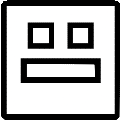

Rules
- Levels must be fully created in the 24-hour period. No starting or uploading before the time begins!
- Levels should be over 45 seconds long.
- Levels must be fully decorated in order to be in the final list.
- Collabs are welcome with no limit to the amount of people in them.
- Levels can use any song on Newgrounds or in the Music Library, but it is recommended you use a song submitted to FORM's All Nighter OR from the Exobolt or [???] labels.
- Levels must include the GD All Nighter logo in the endscreen (plus the Exobolt/[???] label logos if you used one of their songs). You can find them by going to the ID 128551914.
- Levels should be over 45 seconds long.
- Levels must be fully decorated in order to be in the final list.
- Collabs are welcome with no limit to the amount of people in them.
- Levels can use any song on Newgrounds or in the Music Library, but it is recommended you use a song submitted to FORM's All Nighter OR from the Exobolt or [???] labels.
- Levels must include the GD All Nighter logo in the endscreen (plus the Exobolt/[???] label logos if you used one of their songs). You can find them by going to the ID 128551914.
FAQ
Can I host collabs/be a part of them?
Absolutely! There's no limit to this.
Can I invite anyone I want?
Please do! The more, the merrier!
How will I get my level sent?
After the event, the Judge team will be reviewing levels to see every entry and the best entries will be sent.
Can I start with a layout?
No, the entire level must be made within the 24 hours, including the layout.
Can I use a NONG?
No.
How many levels can I participate/build in?
As many as you'd like!
What happens if I don't finish my entry by the 24-hour mark?
Keep working on it! Even if it doesn't end up getting finished, you can continue the level later.
What happens if something goes wrong?
Contact eviroze, Slopes, or an Event Staff.
Does our level/description have to be/have something specific?
The description has to mention that it's a level for GD All Nighter, as well as the endscreen needing to have the GDAN logo (which you can find the ID for in the Rules and Assets page, but otherwise, you have free will)!
Staff
Hosts
eviroze




Slopes

Judges
Halapeenyo

RavingRafters

Waffl3X
YraX
Other Staff
underscored

Prism
Galacty
acezure